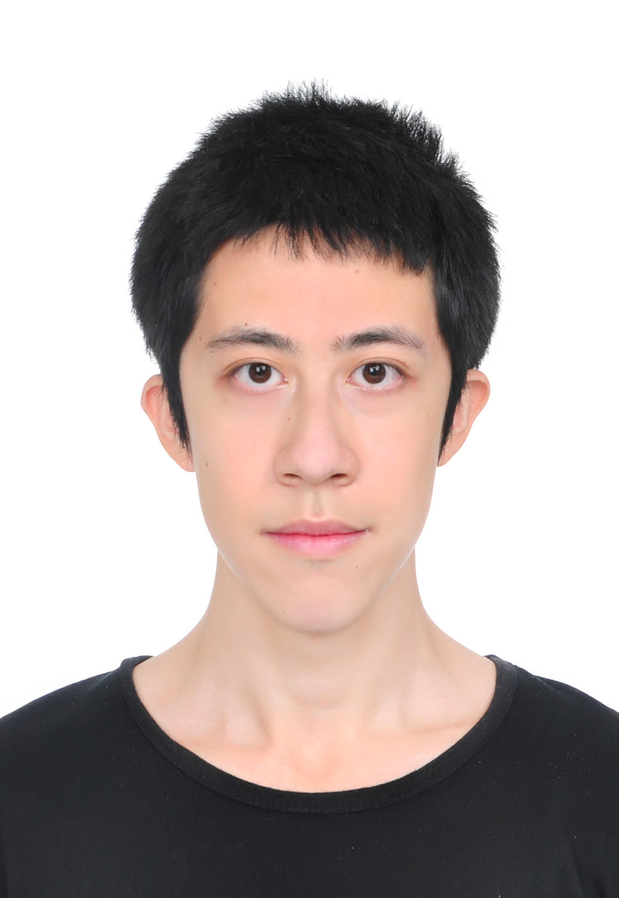

|
Shange Tang
|
 |
I am a researcher at OpenAI.
I obtained my Ph.D. degree at Princeton University in 2026, advised by Professor Jianqing Fan and Professor Chi Jin. I received my bachelor's degree from School of Mathematical Sciences at Peking University in 2021.
I am interested in theory and applications of statistics and machine learning.
E-mail: shangetang [@] princeton [DOT] edu
Google Scholar
|
Research
My research interests include
Selected Works
Yong Lin, Shange Tang, Bohan Lyu, Ziran Yang, Jui-Hui Chung, Haoyu Zhao, Lai Jiang, Yihan Geng, Jiawei Ge, Jingruo Sun, Jiayun Wu, Jiri Gesi, Ximing Lu, David Acuna, Kaiyu Yang, Hongzhou Lin, Yejin Choi, Danqi Chen, Sanjeev Arora, Chi Jin. “Goedel-Prover-V2: Scaling Formal Theorem Proving with Scaffolded Data Synthesis and Self-Correction.”, arXiv preprint arXiv:2508.03613 (2025). [arXiv]
Yong Lin*, Shange Tang*, Bohan Lyu, Jiayun Wu, Hongzhou Lin, Kaiyu Yang, Jia Li, Mengzhou Xia, Danqi Chen, Sanjeev Arora, Chi Jin. “Goedel-Prover: A Frontier Model for Open-Source Automated Theorem Proving.”, Conference on Language Modeling (COLM) 2025. [arXiv]
Shange Tang*, Jiayun Wu*, Jianqing Fan, Chi Jin. “Benign Overfitting in Out-of-Distribution Generalization of Linear Models.”, International Conference on Learning Representations (ICLR) 2025. [arXiv]
Shange Tang, Soham Jana, Jianqing Fan. “Factor Adjusted Spectral Clustering for Mixture Models.”, arXiv preprint arXiv:2408.12564 (2024). [arXiv]
Jiawei Ge*, Shange Tang*, Jianqing Fan, Cong Ma, Chi Jin. “Maximum Likelihood Estimation is All You Need for Well-Specified Covariate Shift.”, International Conference on Learning Representations (ICLR) 2024. [arXiv]
Jiawei Ge*, Shange Tang*, Jianqing Fan, Chi Jin. “On the Provable Advantage of Unsupervised Pretraining.”, International Conference on Learning Representations (ICLR) 2024, spotlight. [arXiv]
* denotes equal contribution.
Invited Talks
“Goedel-Prover-V2: State-of-the-art performance in Automated Mathematical Theorem Proving”, Centaur AI Institute, Neural-Symbolic AI Summer School, Aug 2025. [Youtube]
“Goedel-Prover: A Frontier Model for Open-Source Automated Theorem Proving”, TTIC Machine Learning Seminar, Mar 2025.
“Benign Overfitting in Out-of-Distribution Generalization of Linear Models”, Simons Institute for the Theory of Computing, Domain Adaptation and Related Areas workshop poster session, Nov 2024.
“Maximum Likelihood Estimation is All You Need for Well-Specified Covariate Shift”, UIUC Machine Learning Seminar, Mar 2024.
A brief cv.
|